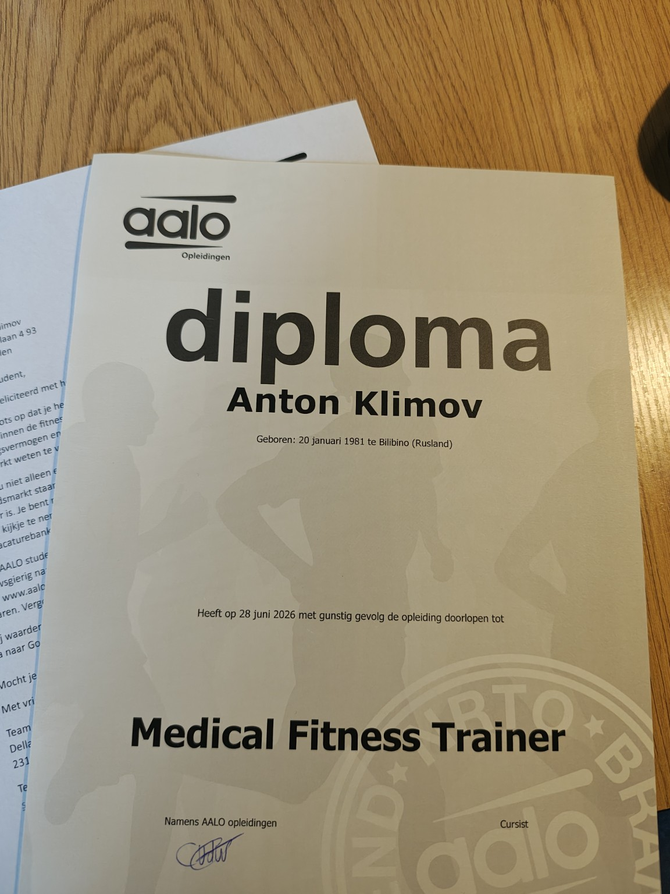

The AIM Method
How Adaptive Motion Intelligence Works
A structured process for understanding movement, building capacity and creating long-term physical adaptation.
Movement is learned. Adaptation is earned.
Adaptive by design
Not a collection of exercises
The AIM Method begins by understanding how a person currently moves, what limits performance and what capacity can be developed. Training decisions are then adjusted according to the individual response rather than based on a fixed template.
Capacity before complexity
Progression before intensity
The process
Four connected stages
01
Stage 01
Assessment
We examine movement quality, mobility, stability, strength, coordination, training history and the demands of daily life or sport.
- Movement analysis
- Strength and mobility screening
- Training and injury history
- Goals and current limitations
02
Stage 02
Adaptation
The programme is built around the person’s current capacity. Exercise selection, load, volume and complexity are adjusted according to the response.
- Individual programming
- Progressive loading
- Movement skill development
- Ongoing adjustments
03
Stage 03
Performance
New capacity is integrated into stronger, more efficient and more confident movement.
- Strength
- Mobility
- Control
- Work and sport-specific preparation
04
Stage 04
Recovery
Training should improve resilience rather than create constant fatigue. Recovery is part of the programme, not an afterthought.
- Load management
- Recovery strategies
- Sustainable progression
- Long-term physical independence
Continuous feedback
The plan adapts with you
AIM is an iterative process. Assessment does not happen only on the first day. Movement quality, symptoms, performance and recovery are monitored throughout the programme.
Assess→Plan→Train→Observe→Adapt
Movement quality
Pain or symptom response
Performance changes
Recovery and readiness
Movement assessment
What we look at
Mobility
Available movement at the joints and through connected movement patterns.
Stability
The ability to control position and movement under changing demands.
Strength
The capacity to produce and absorb force safely and efficiently.
Coordination
How different body segments work together during movement.
Work or sport demands
The specific physical requirements the person must prepare for.
Recovery capacity
How training load, fatigue, sleep and daily stress affect progression.
Individual programming
Why generic programmes often fail
Generic approach
- Same exercises for everyone
- Fixed progression
- Symptoms treated in isolation
- Intensity without context
- Little ongoing reassessment
Adaptive Motion Intelligence
AIM Method
- Individual starting point
- Progression based on response
- Whole movement system considered
- Load matched to capacity
- Continuous observation and adjustment
Built around the person
Who the method is for
AIM supports people who want to develop physical capacity with a clear, individual and progressive approach.
AIM Method coaching does not replace medical diagnosis or treatment. When necessary, training should be coordinated with a qualified healthcare professional.
Professional Credentials
Education & Certifications
My approach combines more than 15 years of practical coaching experience with formal education in medical fitness and movement science. Every recommendation is based on evidence, assessment, and long-term adaptation rather than temporary fixes.

AALO Certified Medical Fitness Trainer
This certification provides a structured foundation in medical fitness, movement assessment, exercise programming, pain-sensitive training, and evidence-informed coaching.
- Medical Fitness
- Functional Assessment
- Exercise Programming
The coaching process
What happens next
Start with clarity
Understand how you move before deciding how you should train.
The first step is an individual assessment of your movement, capacity, goals and training history.